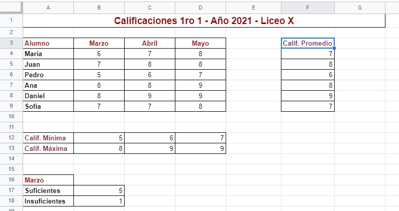
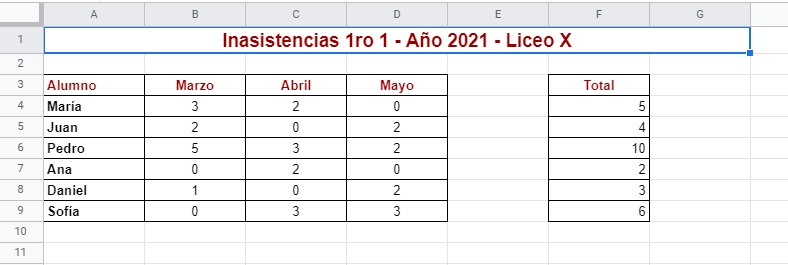

Utilizando el documento hecho en la "Actividad - Unidad I" realiza gráficos para representar:
Calificación Promedio por alumno.
Calificación mínima en los meses de Marzo, Abril y Mayo.
Calificaciones suficientes e insuficientes en el mes de Marzo.

Luego en la hoja de las inasistencias grafica las inasistencias de los alumnos para los meses de Marzo, Abril y Mayo (graficar más de una fila y columna de datos). Guíate por el video tutorial anterior.

Finalmente envía el trabajo al profesor.